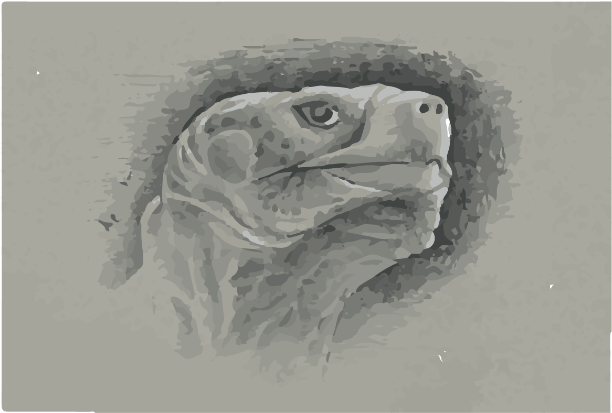

SOUTH AMERICA
Galápagos tortoise (Chelonoidis nigra)
South America is one of the richest sub-continents in terms of cultural and biological diversity; including indigenous people with strong historical ties to the region's ecosystems. Protected and conserved areas have long been a successful management tool to conserve biodiversity, and without them, the global loss of biodiversity would likely be even greater.
SCROLL ▾ARGENTINA
IUCN MANAGEMENT CATEGORIES:
BOLIVIA
IUCN MANAGEMENT CATEGORIES:

BRAZIL
IUCN MANAGEMENT CATEGORIES:

CHILE
IUCN MANAGEMENT CATEGORIES:

COLOMBIA
IUCN MANAGEMENT CATEGORIES:

ECUADOR
IUCN MANAGEMENT CATEGORIES:
FRENCH GUIANA
IUCN MANAGEMENT CATEGORIES:
GUYANA
IUCN MANAGEMENT CATEGORIES:

PARAGUAY
IUCN MANAGEMENT CATEGORIES:

PERU
IUCN MANAGEMENT CATEGORIES:

SURINAME
IUCN MANAGEMENT CATEGORIES:

URUGUAY
IUCN MANAGEMENT CATEGORIES:

VENEZUELA
IUCN MANAGEMENT CATEGORIES: